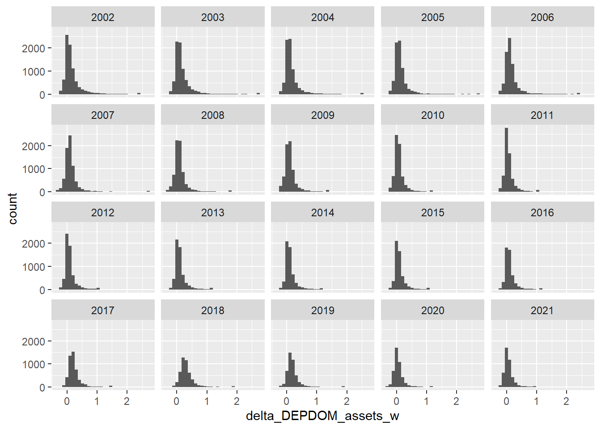
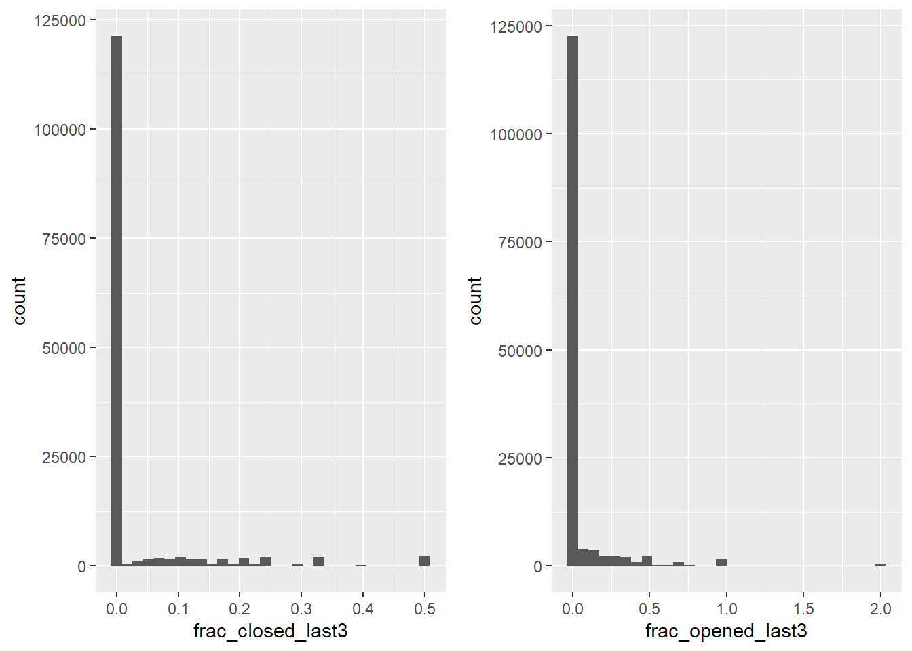

Preliminary Results - 11/06/2025
1 Descriptive Stats
1.1 Dependent Variable: (Deposits\(_{t+3}\) - Deposits\(_{t+1}\))/Assets\(_t\)
1.2 Key RHS Variables (previous three years)

1.3 Summary Stats
|Variable |Obs |Mean |SD |P10 |P25 |P50 |P75 |P90 |
|-----------------------------|----|-----|----|-----|-----|-----|-----|-----|
|delta_DEPDOM_assets_w |5174| 0.21|0.27| 0.00| 0.08| 0.15| 0.25| 0.41|
|frac_closed_last3 |5174| 0.03|0.08| 0.00| 0.00| 0.00| 0.00| 0.11|
|frac_opened_last3 |5174| 0.02|0.07| 0.00| 0.00| 0.00| 0.00| 0.01|
|share_existing_closed_last3 |5174| 0.02|0.06| 0.00| 0.00| 0.00| 0.00| 0.08|
|share_recent_acq_closed_last3|5174| 0.00|0.02| 0.00| 0.00| 0.00| 0.00| 0.00|
|closed_last3_dummy |5174| 0.17|0.37| 0.00| 0.00| 0.00| 0.00| 1.00|
|opened_last3_dummy |5174| 0.10|0.30| 0.00| 0.00| 0.00| 0.00| 1.00|
|log_assets |5174|12.56|1.49|10.93|11.61|12.37|13.27|14.35|
|equity_assets |5174| 0.13|0.07| 0.09| 0.10| 0.11| 0.13| 0.16|
|roe |5174| 0.09|0.17| 0.03| 0.06| 0.09| 0.12| 0.16|
|nim_assets |5174| 0.03|0.01| 0.03| 0.03| 0.03| 0.04| 0.04|
|deposits_assets |5174| 0.83|0.09| 0.76| 0.81| 0.85| 0.88| 0.89|
|loans_assets |5174| 0.66|0.17| 0.43| 0.57| 0.70| 0.78| 0.83|2 Results
2.1 Baseline
| |model 1 |model 2 |model 3 |model 4 |model 5 |model 6 |model 7 |model 8 |
|-------------------------------------|----------|----------|----------|----------|----------|----------|----------|----------|
|frac_closed_last3 | 0.0824***| 0.0186 | | | | | | |
| |(0.0169) |(0.0156) | | | | | | |
|share_existing_closed_last3 | | | 0.0192 | 0.0200 | | | | |
| | | |(0.0213) |(0.0194) | | | | |
|share_recent_acq_closed_last3 | | | 0.6853***| 0.1139 | | | | |
| | | |(0.0913) |(0.0758) | | | | |
|closed_last3_dummy | | | | | 0.0189***| 9.77e-7 | | |
| | | | | |(0.0039) |(0.0034) | | |
|share_sophisticated_closed_last3 | | | | | | | 0.0788***| 0.0167 |
| | | | | | | |(0.0171) |(0.0164) |
|share_non_sophisiticated_closed_last3| | | | | | | 0.0758***| 0.0174 |
| | | | | | | |(0.0173) |(0.0161) |
|frac_opened_last3 | 0.1334***|-0.0257** | 0.1353***|-0.0250** | | | 0.1329***|-0.0258** |
| |(0.0114) |(0.0087) |(0.0113) |(0.0087) | | |(0.0114) |(0.0087) |
|opened_last3_dummy | | | | | 0.0669***|-0.0059 | | |
| | | | | |(0.0049) |(0.0038) | | |
|log_assets | 0.0008 |-0.2828***|-2.88e-5 |-0.2832***|-0.0056***|-0.2825***| 0.0008 |-0.2828***|
| |(0.0013) |(0.0081) |(0.0013) |(0.0082) |(0.0015) |(0.0081) |(0.0013) |(0.0081) |
|equity_assets | 0.4154***| 0.2867* | 0.4098***| 0.2845* | 0.3999***| 0.2894* | 0.4153***| 0.2868* |
| |(0.0538) |(0.1203) |(0.0535) |(0.1201) |(0.0539) |(0.1205) |(0.0538) |(0.1203) |
|roe |-0.0200* | 0.0411** |-0.0199* | 0.0411** |-0.0193* | 0.0410** |-0.0200* | 0.0411** |
| |(0.0080) |(0.0147) |(0.0080) |(0.0147) |(0.0079) |(0.0147) |(0.0081) |(0.0147) |
|nim_assets |-0.7828** |-0.8997** |-0.7878** |-0.9044** |-0.8087** |-0.9002** |-0.7820** |-0.8994** |
| |(0.2466) |(0.3480) |(0.2465) |(0.3481) |(0.2534) |(0.3480) |(0.2465) |(0.3480) |
|deposits_assets | 0.0433 |-0.2352***| 0.0418 |-0.2361***| 0.0321 |-0.2350***| 0.0435 |-0.2352***|
| |(0.0244) |(0.0361) |(0.0244) |(0.0362) |(0.0245) |(0.0361) |(0.0244) |(0.0361) |
|loans_assets | 0.1671***| 0.1289***| 0.1660***| 0.1289***| 0.1682***| 0.1289***| 0.1672***| 0.1289***|
| |(0.0116) |(0.0212) |(0.0116) |(0.0212) |(0.0117) |(0.0212) |(0.0116) |(0.0212) |
|Fixed-Effects: |----------|----------|----------|----------|----------|----------|----------|----------|
|YEAR |Yes |Yes |Yes |Yes |Yes |Yes |Yes |Yes |
|RSSDID |No |Yes |No |Yes |No |Yes |No |Yes |
|_____________________________________|__________|__________|__________|__________|__________|__________|__________|__________|
|S.E.: Clustered |by: RSSDID|by: RSSDID|by: RSSDID|by: RSSDID|by: RSSDID|by: RSSDID|by: RSSDID|by: RSSDID|
|Observations |118,292 |118,292 |118,292 |118,292 |118,292 |118,292 |118,292 |118,292 |
|R2 |0.07368 |0.46771 |0.07482 |0.46775 |0.07533 |0.46762 |0.07371 |0.46771 |
|Within R2 |0.01886 |0.15673 |0.02006 |0.15678 |0.02061 |0.15658 |0.01889 |0.15673 |2.2 By Regime
| |model 1 |model 2 |model 3 |model 4 |
|-----------------------------|----------|----------|----------|----------|
| |2003:2007 |2008:2011 |2012:2019 |2020:2021 |
| | | | | |
|share_existing_closed_last3 | 0.0904 |-0.0276 | 0.0020 | 0.0385 |
| |(0.0535) |(0.0360) |(0.0255) |(0.0461) |
|share_recent_acq_closed_last3| 0.6299* | 1.071*** | 0.4555***| 0.1201 |
| |(0.2451) |(0.2314) |(0.1037) |(0.1318) |
|frac_opened_last3 | 0.0838***| 0.1299***| 0.2958***| 0.1615***|
| |(0.0124) |(0.0191) |(0.0265) |(0.0440) |
|log_assets |-0.0019 |-0.0022 | 0.0148***|-0.0023 |
| |(0.0027) |(0.0018) |(0.0017) |(0.0021) |
|equity_assets | 0.7629***| 0.4331***| 0.0913 |-0.2799***|
| |(0.1049) |(0.0802) |(0.0687) |(0.0786) |
|roe |-0.3236***| 0.0494** | 0.0131 |-0.0016 |
| |(0.0515) |(0.0191) |(0.0154) |(0.0088) |
|nim_assets |-1.051** |-0.1942 | 0.3394 | 1.880** |
| |(0.3690) |(0.3297) |(0.2783) |(0.5886) |
|deposits_assets |-0.0185 | 0.0554 | 0.0635 |-0.3260***|
| |(0.0413) |(0.0300) |(0.0472) |(0.0691) |
|loans_assets | 0.2047***|-0.0202 | 0.1519***| 0.1920***|
| |(0.0208) |(0.0157) |(0.0150) |(0.0237) |
|Fixed-Effects: |----------|----------|----------|----------|
|YEAR |Yes |Yes |Yes |Yes |
|_____________________________|__________|__________|__________|__________|
|S.E.: Clustered |by: RSSDID|by: RSSDID|by: RSSDID|by: RSSDID|
|Observations |34,982 |25,110 |40,247 |8,306 |
|R2 |0.04032 |0.02896 |0.15580 |0.06964 |
|Within R2 |0.03921 |0.02406 |0.04705 |0.06960 |2.3 Interaction with frac deposits in sophisticated zip codes
| |model 1 |model 2 |model 3 |model 4 |model 5 |model 6 |
|-----------------------------------------------|----------|----------|----------|----------|----------|----------|
|frac_closed_last3 | 0.0193 |-0.0184 | | | | |
| |(0.0239) |(0.0243) | | | | |
|frac_closed_last3 x sophisticated_w | 0.1249** | 0.0690 | | | | |
| |(0.0417) |(0.0425) | | | | |
|share_existing_closed_last3 | | |-0.0277 | 0.0028 | | |
| | | |(0.0296) |(0.0288) | | |
|share_existing_closed_last3 x sophisticated_w | | | 0.0833 | 0.0282 | | |
| | | |(0.0520) |(0.0483) | | |
|share_recent_acq_closed_last3 | | | 0.3975* |-0.1921 | | |
| | | |(0.1774) |(0.1570) | | |
|sophisticated_w x share_recent_acq_closed_last3| | | 0.6778* | 0.5232* | | |
| | | |(0.2857) |(0.2383) | | |
|closed_last3_dummy | | | | | 0.0084 |-0.0077 |
| | | | | |(0.0062) |(0.0059) |
|closed_last3_dummy x sophisticated_w | | | | | 0.0252* | 0.0129 |
| | | | | |(0.0106) |(0.0103) |
|frac_opened_last3 | 0.0992***|-0.0104 | 0.0993***|-0.0107 | | |
| |(0.0155) |(0.0126) |(0.0154) |(0.0127) | | |
|sophisticated_w x frac_opened_last3 | 0.0571* |-0.0246 | 0.0605* |-0.0226 | | |
| |(0.0269) |(0.0209) |(0.0267) |(0.0209) | | |
|opened_last3_dummy | | | | | 0.0537***|-0.0002 |
| | | | | |(0.0075) |(0.0063) |
|sophisticated_w x opened_last3_dummy | | | | | 0.0272* |-0.0113 |
| | | | | |(0.0126) |(0.0110) |
|sophisticated_w | 0.0238***| 0.0035 | 0.0244***| 0.0037 | 0.0249***| 0.0042 |
| |(0.0038) |(0.0092) |(0.0038) |(0.0093) |(0.0039) |(0.0092) |
|log_assets |-0.0024 |-0.2977***|-0.0033* |-0.2981***|-0.0095***|-0.2974***|
| |(0.0014) |(0.0082) |(0.0014) |(0.0083) |(0.0016) |(0.0082) |
|equity_assets | 0.4600***| 0.3143* | 0.4527***| 0.3120* | 0.4418***| 0.3175* |
| |(0.0592) |(0.1314) |(0.0589) |(0.1312) |(0.0594) |(0.1313) |
|roe |-0.0197* | 0.0391** |-0.0194* | 0.0392** |-0.0185* | 0.0390** |
| |(0.0084) |(0.0146) |(0.0083) |(0.0146) |(0.0082) |(0.0146) |
|nim_assets |-0.7483** |-0.8501* |-0.7523** |-0.8522* |-0.7661** |-0.8510* |
| |(0.2602) |(0.3566) |(0.2605) |(0.3572) |(0.2673) |(0.3566) |
|deposits_assets | 0.0323 |-0.2695***| 0.0304 |-0.2706***| 0.0201 |-0.2693***|
| |(0.0249) |(0.0375) |(0.0249) |(0.0376) |(0.0250) |(0.0375) |
|loans_assets | 0.1642***| 0.1404***| 0.1629***| 0.1403***| 0.1645***| 0.1406***|
| |(0.0120) |(0.0205) |(0.0120) |(0.0205) |(0.0121) |(0.0205) |
|Fixed-Effects: |----------|----------|----------|----------|----------|----------|
|YEAR |Yes |Yes |Yes |Yes |Yes |Yes |
|RSSDID |No |Yes |No |Yes |No |Yes |
|________________________________________ |__________|__________|__________|__________|__________|__________|
|S.E.: Clustered |by: RSSDID|by: RSSDID|by: RSSDID|by: RSSDID|by: RSSDID|by: RSSDID|
|Observations |108,801 |108,801 |108,801 |108,801 |108,801 |108,801 |
|R2 |0.06021 |0.47542 |0.06161 |0.47548 |0.06225 |0.47531 |
|Within R2 |0.02300 |0.17163 |0.02446 |0.17174 |0.02512 |0.17146 |